Ses expériences innombrables vous marqueront à vie
La ville de Glasgow est incroyablement riche. Longtemps montrée du doigt, c’est aujourd’hui une destination qui allie raffinement, industrie, art moderne et culture.
Sans oublier le sport : le Queen’s Park FC est le plus ancien club d’Écosse. Glasgow propose également de nombreux musées à ses visiteurs ainsi que de splendides bâtiments, autant victoriens que modernes. Elle est le berceau du célèbre Charles Rennie Mackintosh, architecte et décorateur reconnu dans le monde entier.
Enfin, Glasgow est dynamique de jour... comme de nuit !
A ne pas manquer
Circuit touristique en bus à Glasgow
Découvrez la ville animée et cosmopolite à votre rythme; écoutez les commentaires enregistrés et descendez à plusieurs arrêts stratégiquement placés pour explorer Glasgow.
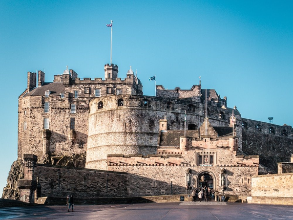
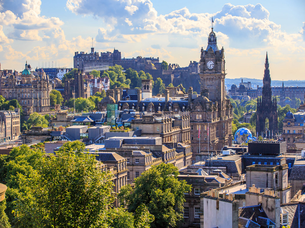
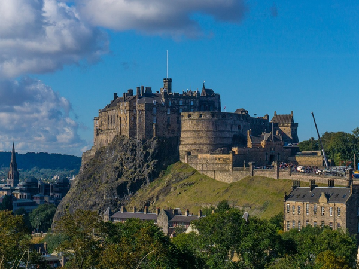
Edimbourg
La capitale écossaise inoubliable
Située sur la côte est de l’ Écosse,
Édimbourg, sa capitale, est sûrement l’une des
plus
belles villes du pays. En moins de 2h d’avion, vous vous retrouverez sur une terre
de
légende, dans une ambiance féérique, entre mer et montagne.
C’est la deuxième destination touristique du Royaume-Uni après Londres.
Chaque
année, près
de 2 millions de touristes viennent découvrir les attractions historiques et
culturelles qui
font sa renommée : le château d’Édimbourg, le palais de Holyrood, la National
Gallery of
Scotland, son festival international… Visiter Édimbourg, c’est également découvrir
plusieurs
ambiances selon les quartiers. Old Town, New Town, Dean Village ou encore Leith,
n’auront
plus de secret pour vous !
Entre patrimoine, histoire, gastronomie et ambiance hors du commun, cette ville
cosmopolite à l’atmosphère si particulière, vous promet un séjour riche et intense. Et
pour vous
y aider, nous vous avons préparé un guide de voyage complet !
A ne pas manquer
Visite privée du château d'Édimbourg
Si vous êtes un féru d’histoire, aucune visite à Edimbourg n’est complète sans une visite
du château d’Édimbourg.
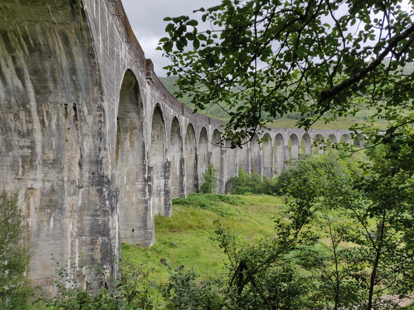
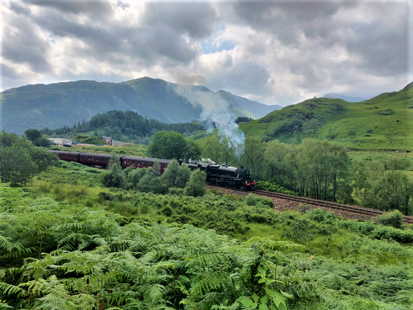
Glenfinnan
Le viaduc de Glenfinnan et le Poudlard Express
Glenfinnan attire des milliers de visiteurs du monde entier pour découvrir les paysages magnifiques mais aussi l'atmosphère si particulière qui caractèrise ce lieu.
Le célèbre viaduc de Glenfinnan transporte le chemin de fer jusqu'à la gare de Glenfinnan sur une portée de 1 000 pieds, à 100 pieds au-dessus du sol. Le train à vapeur Jacobite circule d'ici à Fort William et Mallaig pendant les mois d'été avec des trains réguliers disponibles le reste de l'année.
Le tournage des deuxième et troisième livres de Harry Potter, Harry Potter et les chambres des secrets et Harry Potter et le prisonnier d'Azkaban a eu lieu dans cette zone avec le Poudlard Express faisant escale à Glenfinnan !
A ne pas manquer
Suivez les pas de Harry, Hermione et Ron dans le mythique Poudlard Express
Qualifié par beaucoup comme le plus beau trajet en train au monde !
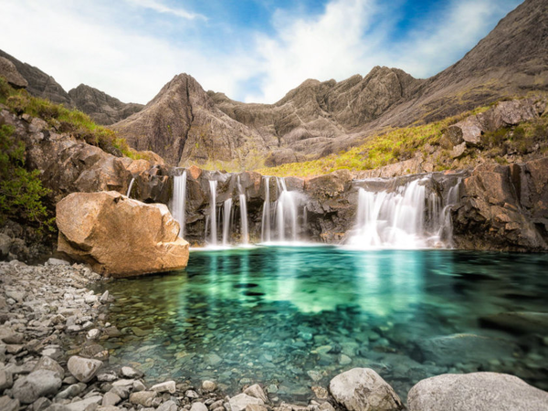
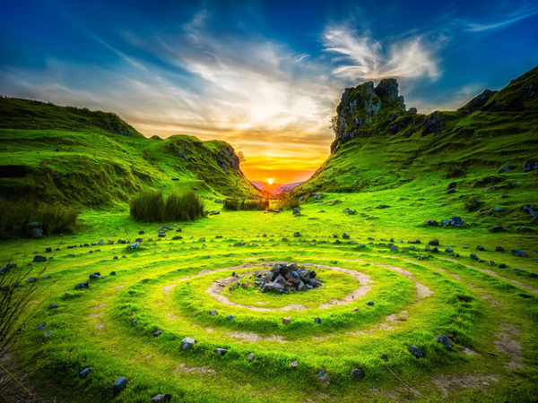
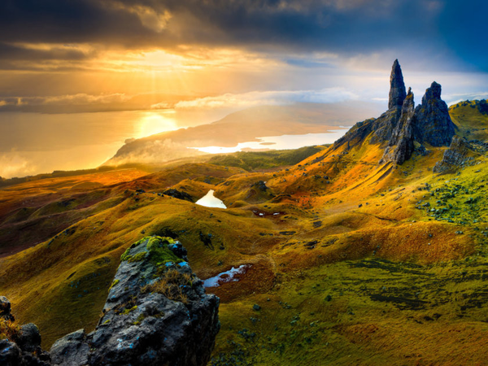
Ile de Skye
Le joyau de l'Ecosse aux paysages grandioses et naturels
L'ile de Skye est un lieu vraiment magique. En tant que plus grande île des Hébrides intérieures, elle offre certains des paysages les plus emblématiques d'Écosse. Que vous n'y restiez que quelques jours avant de poursuive votre voyage en Écosse ou un peu plus longtemps, l'île ne manque pas de charme pour vous séduire, avec ses chaînes de montagnes, ses kilomètres de côte spectaculaire et son histoire captivante. Venez avec votre esprit d’aventure !Visiter l’île de Skye, c’est découvrir la deuxième plus grande île d’Ecosse.
A ne pas manquer
Exploration de l'île de Skye
Si vous avez l'âme d'un photographe vous serez servi, ce voyage offre une multitude de vues panoramiques sur le paysage naturel de l'Écosse !
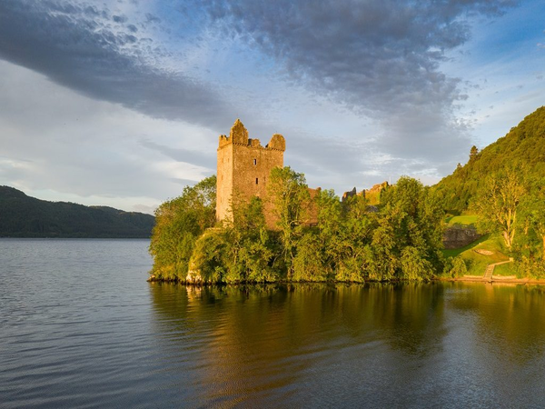
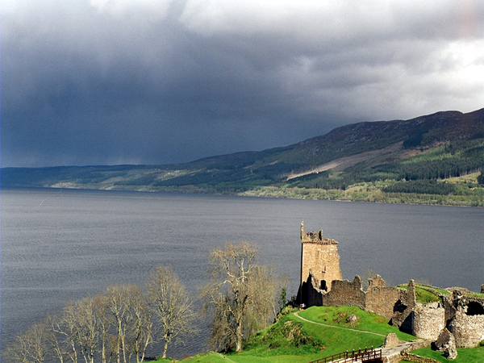
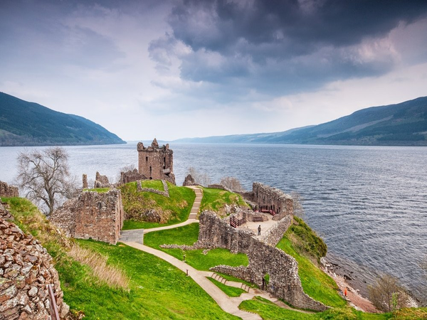
Loch Ness - Urquhart Castle
Le chateau d'Urquhart bordant le célèbre lac Loch Ness
L'histoire du monstre du Loch Ness est un tantinet farfelue. Elle se passe en Écosse, dans les Highlands, une terre magnifique au nord du pays dont la traversée est rythmée par des lacs, des montagnes, des châteaux en ruine.
A en croire les récits écossais, cette zone géographique serait majoritairement habitée par des moutons et des fantômes. Un autre habitant fait son apparition il y a maintenant une centaine d’années, sous l’apparition d’un monstre nommé Nessie.
Il aurait été vu dans le lac du Loch Ness, mais avons-nous des preuves ? Plongez avec nous pour découvrir les mystères du lac !
A ne pas manquer
Tentez d'apercevoir le légendaire Monstre du Loch Ness
Naviguez à travers les eaux brumeuses du Loch Ness et découvrez la légende étrange du monstre du Loch Ness lors de cette croisière touristique.
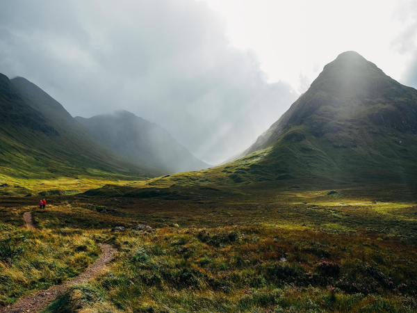
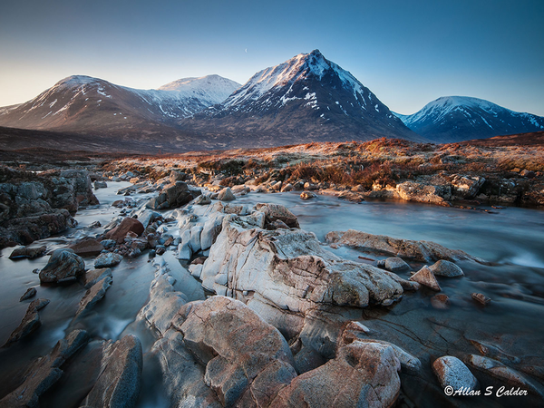
Glencoe Highlands
La vallée verdoyante et
sauvage, préservée et encerclée par les hauts monts.
Nous vous parlons des Highlands depuis le début, alors il ne nous est pas possible d’omettre la Vallée de Glencoe. Cette vallée est une étendue verdoyante et sauvage, préservée et encerclée par les hauts monts. Véritable écrin de nature, c’est un des plus beaux endroits d’Écosse, surtout pour les amatrices et amateurs de randonnée ou escalade. C’est toute la vallée qui s’y prête, avec ses nombreux sentiers et ses flancs escarpés. Les Highlands représentent une nature encore indomptée et riche, à la météo un peu capricieuse, mais pour le moins charmeuse.
A ne pas manquer
Excursion à Glencoe et dans les Highlands
Admirez les lochs boisés et les villages nichés au fil de paysages spectaculaires en route vers Glencoe à ses monts verdoyants !
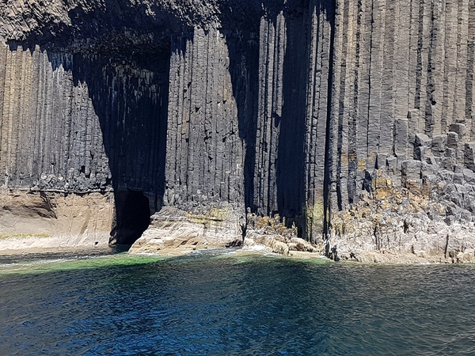
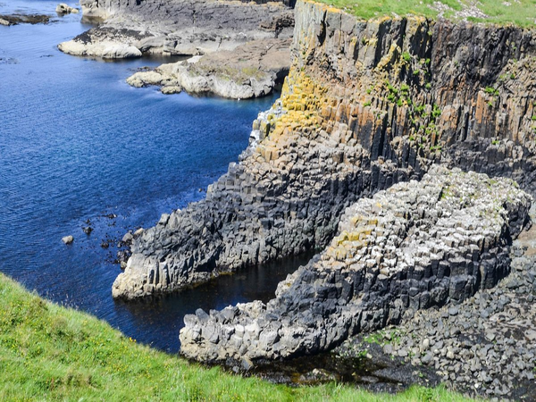
Staffa
Les fameuses colonnes hexagonales de la Grotte de Fingal
À l’ouest, au large de l’Île de Mull, se trouve Staffa. Si aujourd’hui les seuls habitant(e)s de l’île sont des macareux, il reste que son histoire est pleine de rebondissements.
D’ailleurs, c’est ce qui attire en partie certain(e)s touristes, curieuses et curieux d’en connaître les secrets et légendes. Mais sa plus grande particularité, et également son attrait principal, ce sont sa géographie étonnante et ses grottes. Notamment, celle de Fingal, pour n’en citer qu’une.
Non sans rappeler la Chaussée des Géants d’Irlande du Nord, la Grotte de Fingal possède des colonnes de basalte. Cette formation rocheuse plus que stupéfiante borde la grotte, même à l’intérieur. Le plus extraordinaire, c’est le son que dégage la grotte dans l’eau s’y engouffre. L’air, soufflé, frôle les colonne, rebondit sur les parois, et génère un écho harmonieux, rappelant parfois le son des orgues.
A ne pas manquer
Excursion dans de multiples endroits magiques incluant la Grotte de Fingal
Découvrez les lieux les plus emblématiques d'Ecosse à travers une excursion rythmée par des paysages à couper le souffle !
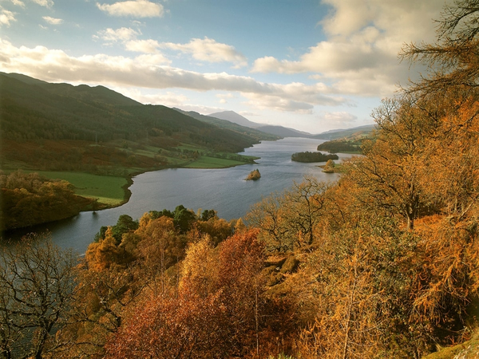
Queen's view
Le panorama à couper le souffle
Lorsque vous allez visiter l’Écosse, vous verrez de très nombreuses choses, depuis de nombreux points de vue. The Queen’s View est considéré comme le plus beau d’entre eux. Et pour cause : ce point précis offre un panorama imprenable et incroyable sur le Loch Tummel et ses rives.
On l’aperçoit d’ailleurs sur toute sa longueur, pendant que les montagnes viennent délicatement s’y perdre.
A ne pas manquer
Visite guidée au coeur de l'Ecosse
Un tour à la découverte du cœur vert de l'Écosse. Explorez les forêts et les lochs de ce pays magique, et découvrez son histoire et sa culture dans les châteaux et les distilleries de whisky !
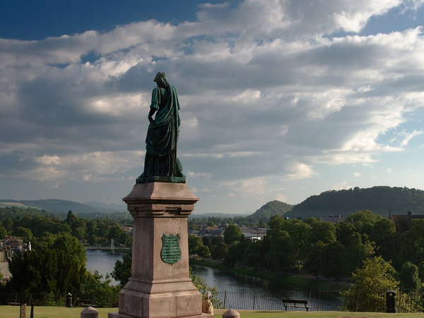
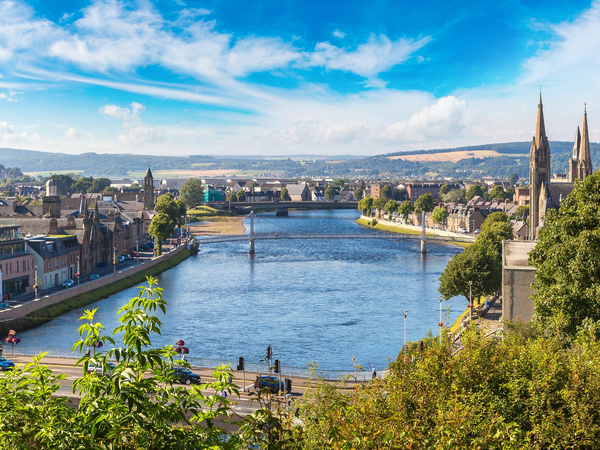
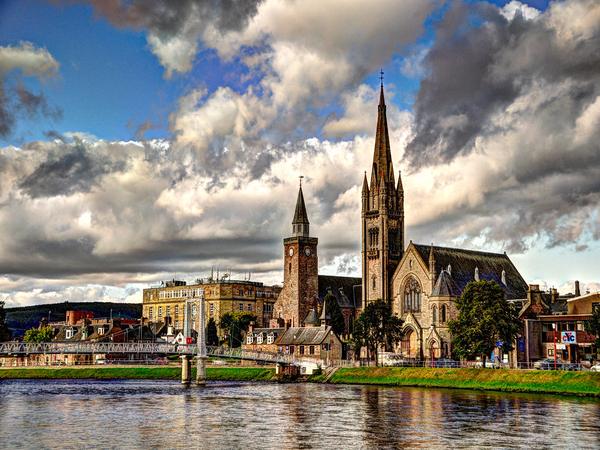
Inverness
La somptueuse capitale culturelle de l'Ecosse.
Inverness est une jolie petite ville d’Écosse, située au nord du pays. À l’embouchure de la rivière Ness, son nom signifie littéralement “Bouche de la rivière Ness”. C’est une ville au charme incontestable, capitale des Highlands qui font la renommée du pays.
Partez à la découverte des rives poétiques du Ness, des ruelles étroites et des bâtiments à l’allure ancienne. Seulement l’allure, car ayant été très disputée au cours de son histoire, ses bâtiments ne datent pas d’avant le XIXe siècle. Ceci dit, Inverness mérite complètement le détour et sa place dans cette liste des plus beaux endroits à visiter en Écosse, pour le charme qui opère quand on la pénètre.
A ne pas manquer
Visite privée d'une journée à Inverness
Apprenez en plus sur la région et son histoire à travers un commentaire approfondi par un guide experimenté.
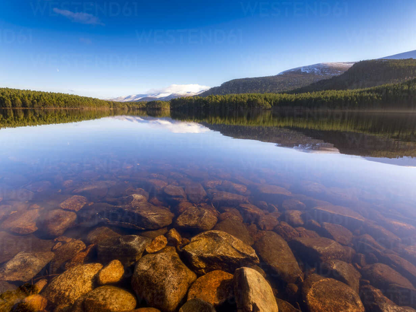
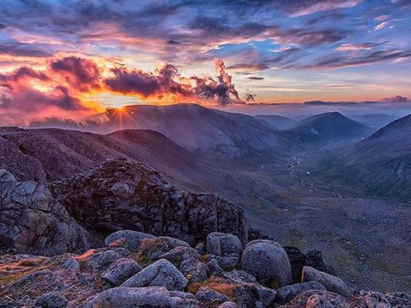
Caingorms National Park
La stupéfiante pépite naturelle ou le meilleur endroit pour vous
ressourcer.
Le Cairngorms National Park est une pépite naturelle à visiter en Ecosse. Il s’adapte aux envies de tout le monde. Effectivement, que vous aimiez vous ressourcer dans une forêt, près d’un lac ou au sommet d’une montagne, ce parc est idéal. Dépensez-vous aussi, grâce aux nombreuses activités proposées sur le territoire : planche à voile, ski, randonnée, vélo en forêt… En plus de tout ça, c’est un parc aux paysages aussi magnifiques que variés.
Bords d’eau, montagnes enneigées (même en août), ou bosquets, il y en a pour tout le monde, sur une étendue gigantesque de plus de 4500 kilomètres carrés. Une belle surface pour se perdre un petit peu…
A ne pas manquer
Excursion au parc national de Cairngorm
Passez la journée à explorer les paysages écossais et le whisky lors d'une excursion d'une journée d'Inverness au parc national de Cairngorms et à la distillerie Glenfiddich.
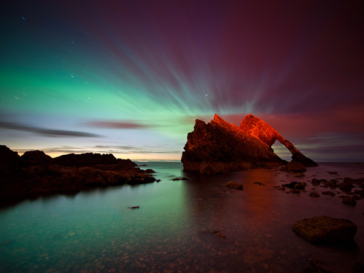
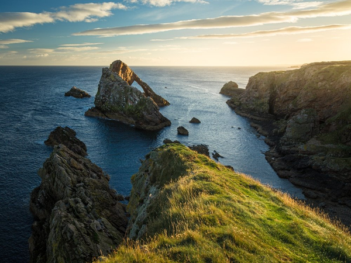
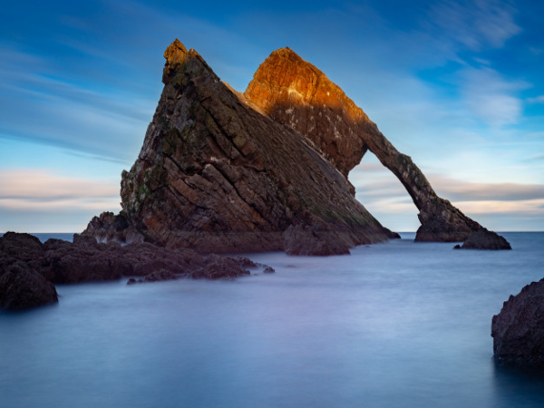
Bow Fiddle Rock
L'étonnante arche naturelle de la Mer du Nord
Merveille naturelle, le Bow Fiddle Rock représente la pointe de l’arc du violon. À son origine, il y a plusieurs centaines de millions d’années, la collision de deux continents. Il en est le vestige. Pour les photographes et amatrices/amateurs, le Bow Fiddle Rock est un parc de jeu infini. À marée haute ou basse, au lever ou au coucher du soleil, avec sous sans brouillard, il révèle ses charmes.
Chaque moment de la journée est unique, et c’est sans compter certaines exceptions annuelles. En effet, deux semaines par an, en mai et an août, vous pourrez apercevoir le soleil se lever dans l’arche formée de la roche.
A ne pas manquer
Tourisme à Portknockie et visite de Bow Fiddle Rock
Apprenez en plus sur la région de Portknockie, n'oubliez pas vos appareils photos car vous aurez plusieurs paysages à sacraliser !
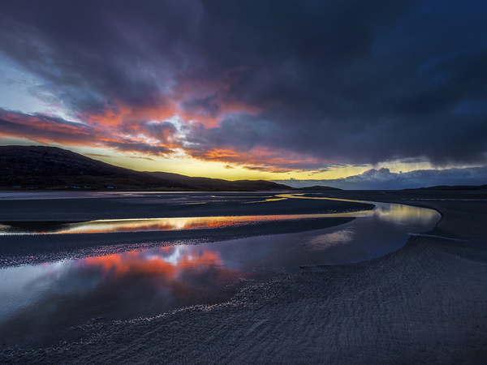
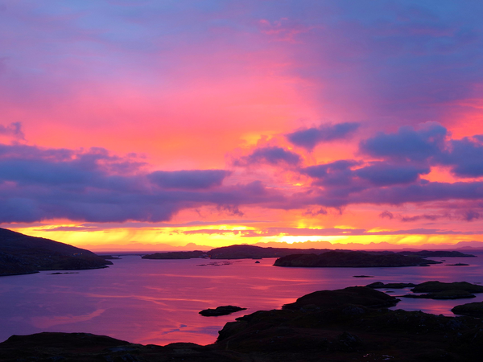
Luskentyre
La plage paradisiaque dans l'archipel de Harris
La plage de Luskentyre est connue à travers le pays pour sa beauté et son aspect paradisiaque confiné. Turquoise, émeraude, et sable doré, tant de couleurs pour ce trésor caché, situé au nord du pays, dans l’archipel de Harris. En été, cette plages prend des airs caribéens, on en oublierait presque qu’elle se trouve en Écosse.
Il s’agit d’un des plus beaux endroits pour s’évader, à la découverte des étendues de sables juxtaposant les collines verdoyantes et les roches noires. Il ne faut pas oublier que l’Écosse n’est pas seulement synonyme de brouillard, lacs profonds et vallées humides…
A ne pas manquer
Excursion sauvage de Lewis, Harris et des Hébrides extérieures au départ d'Inverness
Partez pour l'une des destinations les plus sauvages d'Écosse lors de cette visite d'Inverness à l'île de Lewis et Harris.